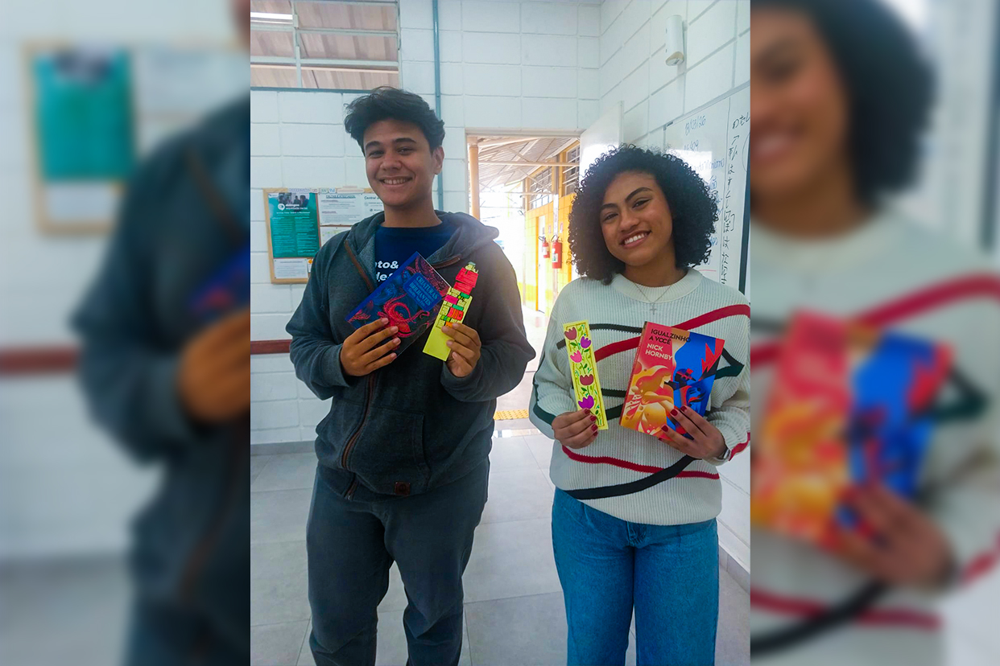
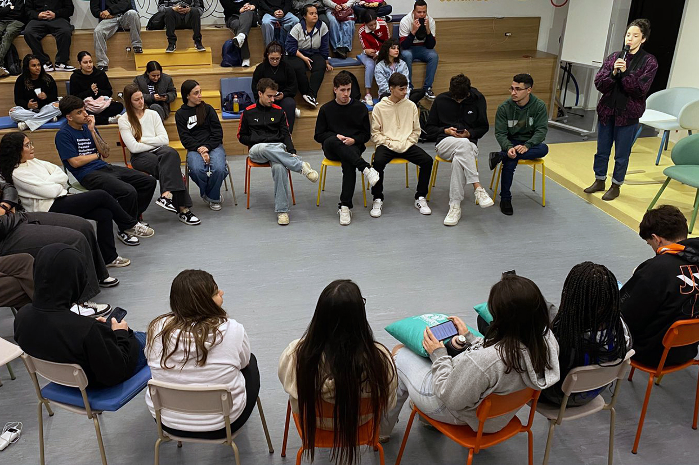
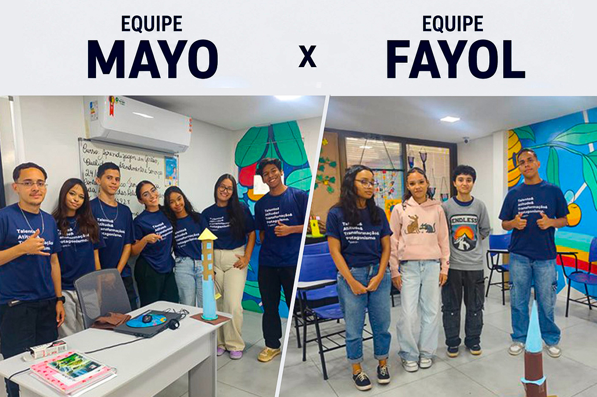
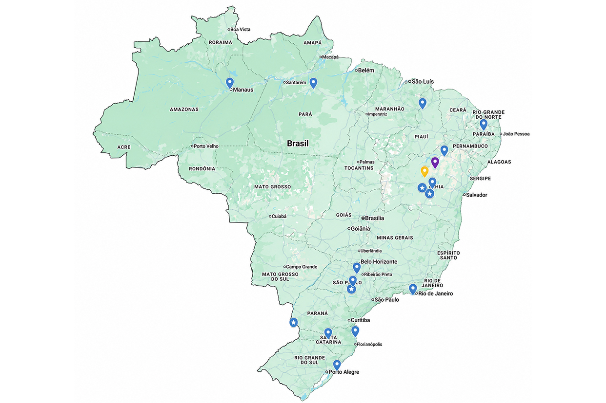
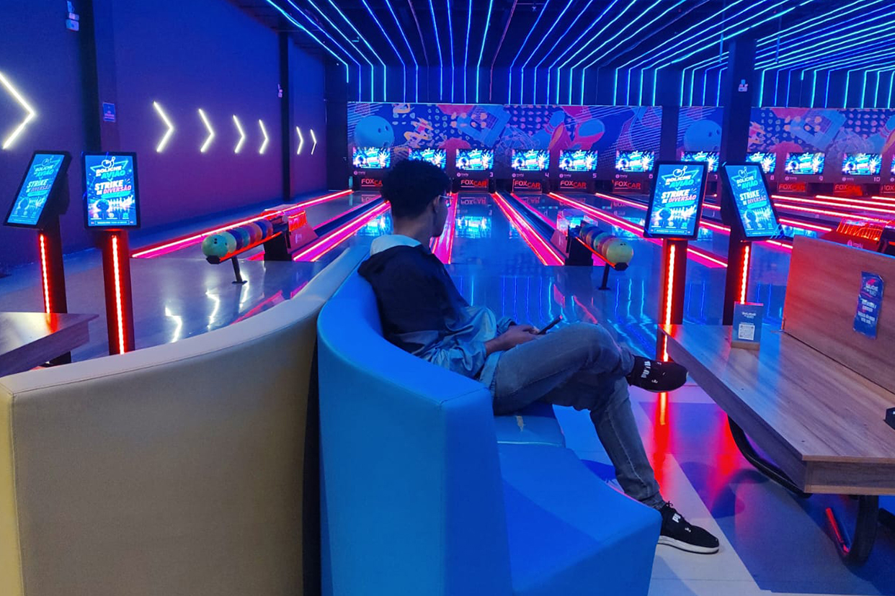
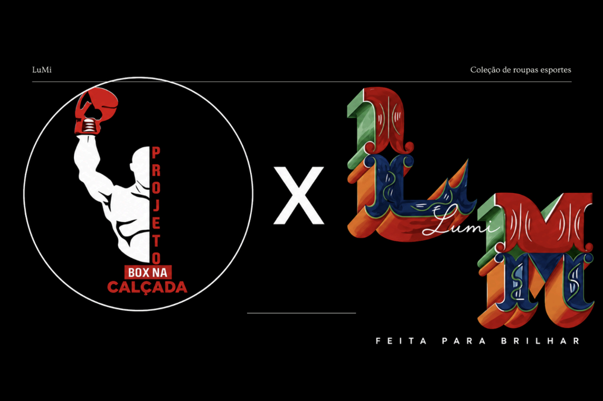
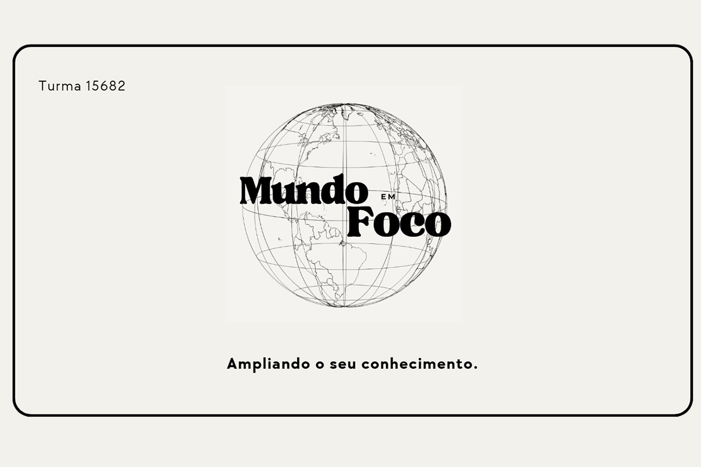
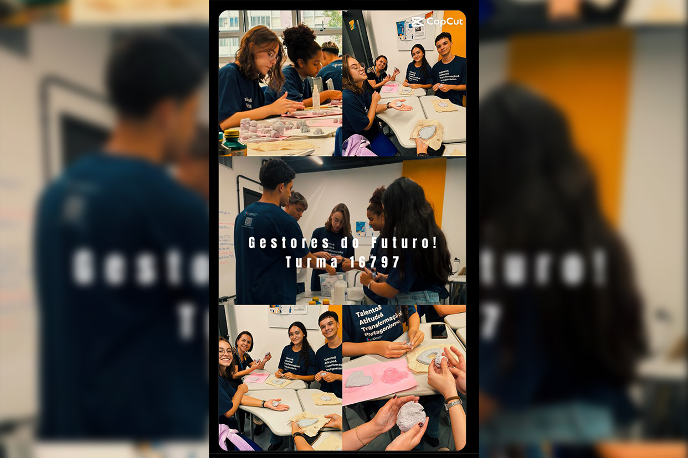
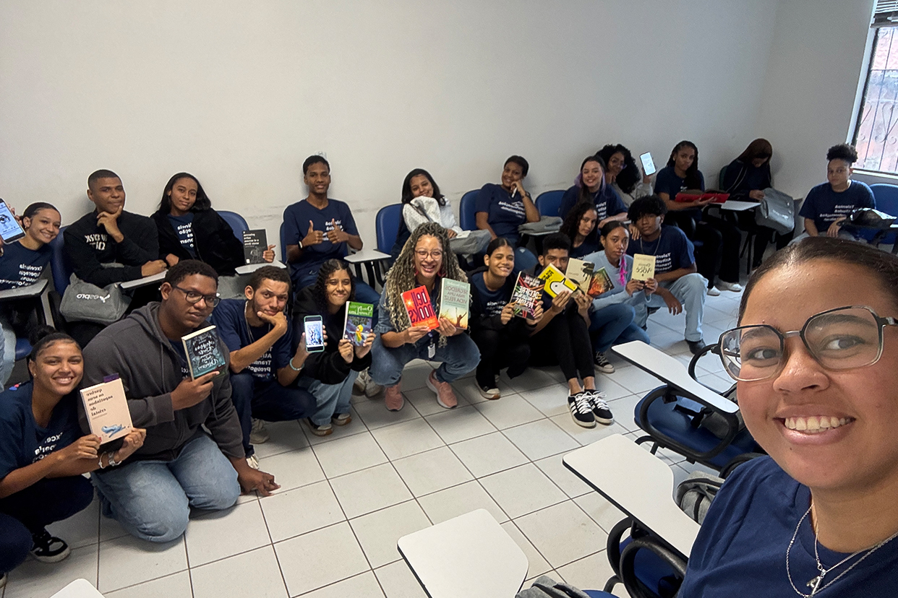
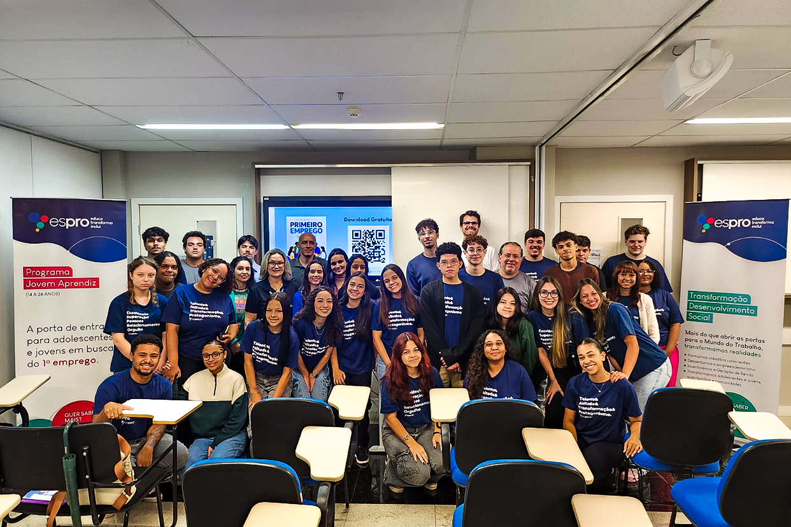

A literatura é uma ferramenta de desenvolvimento profissional e cuidado com a mente! Na unidade de Itaguaçu (SP), a instrutora Fernanda Mariano iniciou o Projeto Leitura com as turmas 16525, 15273, 16965 e 16429, trabalhando a obra O céu de Celinna, escrita por Nanna de Castro. A dinâmica começou com uma leitura coletiva do livro, que abriu caminhos para um debate profundo e reflexivo. Nele, os jovens puderam expor seus pontos de vista sobre características psicológicas e a importância dos cuidados com a saúde mental. Para selar a atividade com criatividade, os estudantes participaram de uma oficina de marca-páginas, e o dono da arte mais criativa de cada turma foi premiado com um livro e um bombom.
Com muita participação e entusiasmo, os jovens adoraram a experiência e compreenderam, na prática, que o hábito da leitura é imprescindível para sua evolução pessoal e profissional.
Clique e aprecie as produções
Unir a análise minuciosa da palavra escrita à expressividade do corpo e da voz foi a estratégia da instrutora Alinne Cordeiro ao aplicar a Oficina de Atuação para a Câmera na Unidade Paulista, envolvendo as turmas 16218 e 15381. Desenvolvida em dois dias de imersão prática com o audiovisual, a atividade levou para a sala de treinamento um ambiente de experimentação artística, repertório cultural e autoconhecimento.
No primeiro dia, a jornada começou com a exibição de cenas de ícones como Fernanda Montenegro e Zé Celso Martinez Corrêa, inspirando os jovens a mergulharem no subtexto de monólogos curtos para construir a psicologia de seus personagens. Já no segundo dia, a teoria ganhou as telas e o espaço cênico! Ao encenarem os textos, os estudantes desenvolveram soft skills fundamentais para o mercado de trabalho, como oratória, desinibição, empatia e escuta ativa.
O impacto dessa vivência integradora ficou claro no depoimento de um dos jovens: "Nunca havia pensado em atuar, pois sou muito tímido, mas esse exercício me levou a conhecer outras partes de mim que eu não imaginava". Afinal, quando o cinema e a interpretação entram em cena, a sala de treinamento se torna um potente espaço de emancipação e descoberta pessoal.
Acesse os registros desse verdadeiro show de talentos
No dia 08/05/2026, a instrutora Paloma Macedo levou para a turma 17228 um desafio que colocou dois grandes modelos administrativos em lados opostos. A estratégia foi desenhada para demonstrar como a gestão impacta diretamente o clima organizacional, a criatividade e o produto final. Na dinâmica, os jovens receberam a missão de construir uma torre com materiais recicláveis, mas com um detalhe: cada equipe precisava incorporar uma filosofia diferente. O Time Fayol (Teoria Clássica) focou em hierarquia, divisão rígida de tarefas e rapidez. Já o Time Mayo (Teoria das Relações Humanas) apostou em comunicação, colaboração, bem-estar e brainstorming criativo.
O impacto na sala de treinamento foi imediato: enquanto a pressão e a rigidez geraram estresse e uma estrutura menos estável no primeiro grupo, o foco no fator humano trouxe leveza, inovação e uma torre muito mais firme para o segundo. No debate final, as turmas concluíram que o sucesso de uma liderança moderna está no equilíbrio: precisamos da organização e estrutura de Fayol (o "corpo" da empresa), mas sem a empatia e a motivação de Mayo (a "alma" da empresa), a produtividade não se sustenta a longo prazo.
Confira os registros dessa dinâmica incrível
Conectar os jovens através do diálogo e da criatividade foi a estratégia da instrutora Camila Cristina para dar vida ao aprendizado sobre sustentabilidade. Ao cruzar o tema de energias renováveis com o documentário A História das Coisas, ela desafiou as turmas a exercitarem a escuta ativa: na apresentação, cada grupo precisava costurar sua resposta com a conclusão do grupo anterior.
E a teoria se transformou em inteligência geográfica! Utilizando os marcadores do Google My Maps, os jovens mapearam as usinas brasileiras e desenvolveram uma forte visão estratégica ao criar infográficos ricos com as vantagens, os desafios e o potencial sustentável de cada região.
Muito mais do que um treinamento de sustentabilidade, essa dinâmica foi o cenário perfeito para ver a nossa cultura institucional acontecer. O desenho instrucional dessa atividade, baseado na Aprendizagem Colaborativa e Dialógica, reflete na prática os pilares do Espro:

A teoria do marketing ganha uma força completamente nova quando rompe as paredes da sala de treinamento. Inspirada por uma atividade de sucesso conduzida inicialmente pela instrutora Jullieth Martins, a instrutora Bruna Beijo replicou a dinâmica e levou mais de 50 alunos de suas turmas de Marketing (turma 13820 e 13821) para um verdadeiro laboratório prático no Shopping do Avião, em Contagem, Minas Gerais. O desafio fez os jovens deixarem de ser apenas clientes por um dia para observar o mercado com os olhos de futuros profissionais do mundo corporativo, aplicando em tempo real os pilares do mix de marketing.
O grande destaque foi ver a maturidade dos jovens ao decifrar de perto os bastidores de marcas com estratégias tão distintas: eles analisaram o mercado de nicho e a experiência do cliente na Petz, os desafios do grande volume e preço competitivo no Apoio Mineiro, a dinâmica do setor de serviços no Boliche e o impacto do visual merchandising na Decathlon. Avaliar o layout das lojas e o comportamento dos consumidores na prática gerou um engajamento significativo, mostrando o quanto as boas ideias pedagógicas se multiplicam e como nossos jovens são protagonistas!
Acompanhe a atividade prática
Unir estilo, inclusão e alta gestão foi o foco dos jovens da turma 16175, da unidade de Belém (PA), no desenvolvimento da Empresa Júnior Lumi. Sob a orientação da instrutora Karlene Vasconcelos, os estudantes aplicaram ferramentas de marketing, branding e criatividade para transformar referências reais em grandes estratégias de mercado.
A equipe Financeira apostou no mercado de alto padrão com a estratégia "Do Casulo ao Tecido", propondo uma coleção exclusiva e limitada em Seda Premium para agregar sofisticação e valor à marca. Já a equipe de Administração trouxe o empreendedorismo social para o centro do negócio com o projeto Lumi & Boxe na Calçada, criando estampas inspiradas nas histórias de superação dessa iniciativa comunitária para promover inclusão e cidadania por meio da moda.
Trabalhando em equipe, os jovens comprovaram que o empreendedorismo moderno vai muito além do produto: uma marca forte vende histórias, valores e transformação social.
Confira essa turma em ação
O projeto Gestores do Futuro estimula a autonomia e o pensamento crítico dos jovens. Na turma 15682, da unidade de Itaguaçu (SP), os jovens orientados pela instrutora Fernanda Machado iniciaram uma empresa de saúde física e mental, mas logo perceberam que o negócio não despertava o interesse do grupo. Com muita maturidade, eles decidiram encerrar as atividades e recomeçar do zero.
Dessa mudança nasceu um novo projeto: uma revista colaborativa baseada em liderança compartilhada, com líderes por setores que se comunicavam constantemente. O resultado do primeiro ciclo foi excelente e trouxe grandes aprendizados sobre relações humanas e gestão. Afinal, recalcular a rota faz parte do crescimento!
Acesse a galeria e acompanhe essa reviravolta
Transformar jornal, cola e água em peças cheias de significado foi o desafio proposto pela instrutora Denise Alves para os Gestores do Futuro da turma 16797. Por meio da técnica artesanal do papel machê, uma prática versátil e sustentável, os jovens uniram a criatividade a uma importante reflexão sobre duas datas marcantes: o Dia do Jovem Trabalhador (24/04) e o Dia do Trabalho (01/05).
Mais do que uma atividade prática, a oficina promoveu um debate profundo sobre o valor do trabalho, a dedicação e as diferentes formas de construir um futuro profissional. Ao produzirem suas próprias peças, os estudantes puderam valorizar o trabalho manual e reconhecer a importância histórica e cultural do artesão na sociedade, desenvolvendo paciência, foco e consciência sustentável.
Afinal, o gosto pela arte também constrói o amanhã, e essa turma segue provando que é possível aprender com propósito, criatividade e união!
Surpreenda-se com o talento dessa turma na galeria
Se alguém ainda pensa que ler é uma atividade solitária, é porque não viu a energia da turma 017855 do Projeto Formar, da unidade de Salvador (BA)! Sob a orientação da instrutora FMT Luciene Alves, os jovens transformaram o treinamento de interpretação e escrita em um dinâmico Clube da Leitura. Em uma roda cheia de debate e conexão, cada um levou seu livro de cabeceira, leu os trechos mais impactantes em voz alta e compartilhou curiosidades, provando que a literatura ganha ainda mais força quando é vivida em conjunto.
E para elevar o nível do projeto, a assistente social Michele Moreno surpreendeu o grupo ao presentear alguns jovens com o clássico O Diário de Anne Frank, expandindo o repertório histórico e cultural dessa galera.
Confira os cliques desse dia dinâmico e repleto de trocas reais
O primeiro emprego é o início de uma grande jornada, mas também um período repleto de dúvidas sobre o mercado corporativo. Pensando em apoiar os jovens nesse momento decisivo, os instrutores Sonia Lemes e Marcos Pinheiro conectaram as turmas 17181 e 17283 da unidade de Londrina (PR) aos acadêmicos de Direito da Clínica de Direitos do Trabalho da Unopar/Anhanguera, liderados pelo Professor Dr. Rodolfo Carvalho.
O grande destaque do encontro foi o lançamento de uma Cartilha de Direitos Trabalhistas digital, desenvolvida sob medida para servir de consulta rápida no dia a dia. Em uma palestra esclarecedora, temas complexos como jornada de trabalho, benefícios e rescisão contratual foram abordados de forma técnica, porém totalmente acessível, eliminando inseguranças e promovendo a conscientização.
Muito além da sala de aula, essa união entre Espro e Unopar/Anhanguera fortalece a sociedade ao formar profissionais mais conscientes de seus papéis, amparados por segurança jurídica e guiados por uma sólida postura ética!
Acompanhe os melhores momentos desse encontroE aí, curtiu o novo formato e as informações do Minuto do Instrutor? Lembre-se de compartilhar com a gente o que tá rolando em sua unidade e dê sugestões de conteúdo!
Deixe um comentário aqui 👇🏼. Sua opinião é importante para nós!